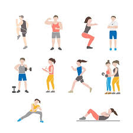

Exercise
체육과 거의 같은 뜻으로 쓰이기도 하지만 사실 동일하진 않다. 운동(運動)은 말 그대로 '움직이는 것' 그 자체를 말하는 거고 체육(體育)은 '몸을 기르는 것'으로서 일반적으로 몸을 움직이는 것, 즉 운동을 통해 도달하는 것이다. 덕육(德育, 덕을 기름)의 방식에 여러 가지가 있듯이(고전을 읽을 수도 있고 심지어 운동을 통해 덕을 기를 수도 있다) 체육의 방식은 운동 말고도 다른 것(건강식, 규칙적 생활 등)이 있을 수 있다. 거꾸로 운동이지만 체육엔 그다지 도움을 주지 않는 운동도 있을 수 있다.
